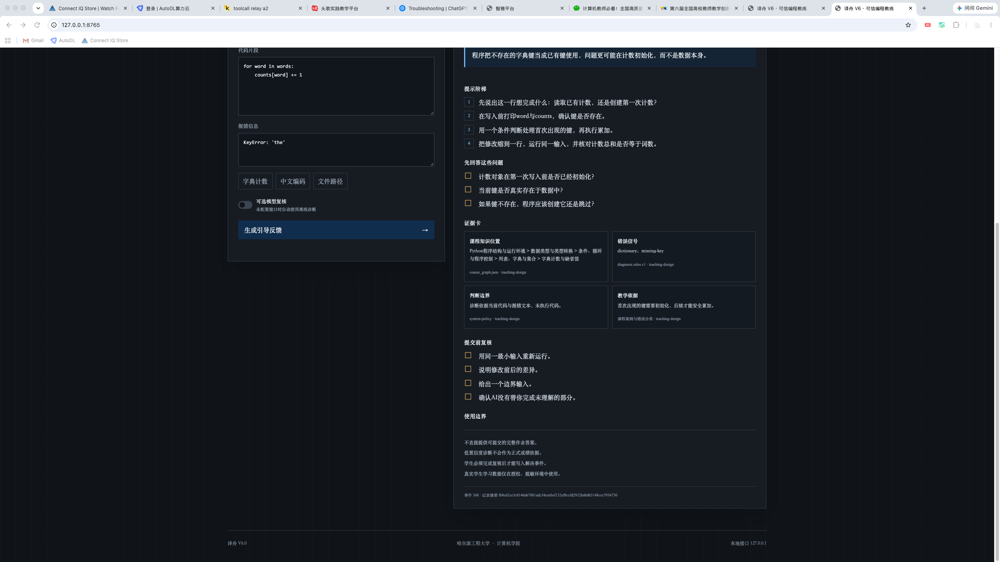
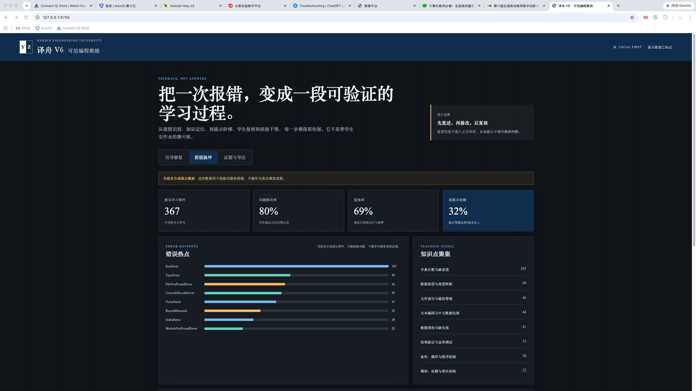
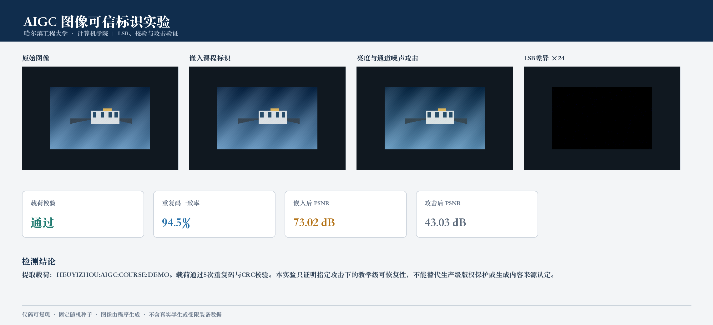

问数航标
面向Python大数据分析课程的AI教学重构。以真实数据任务为轴，把课程图谱、过程评价和可信AI规范连成一条学习路径。
- 课程：Python大数据分析
- 证据：课程任务、学习过程、复核记录
- 特色：三海一核专业数据场景
TEACHING SYSTEMS / VISUAL EVIDENCE
这里展示三项彼此关联但名称、目标与证据结构不同的教学作品： 课程级教学创新、跨专业教学智能体，以及AIGC图像取证实验。
面向Python大数据分析课程的AI教学重构。以真实数据任务为轴，把课程图谱、过程评价和可信AI规范连成一条学习路径。
跨专业Python课程的可信编程教练。它不是直接给答案，而是定位错误、给出提示阶梯、要求复核并保留证据。
从BMP头、位运算和数组出发，把课程标识写入AIGC图像最低有效位，再通过噪声攻击、重复码和CRC验证恢复结果。
TEACHING PILOT / 2026-05-25
40名学生，317个会话，648轮消息。以下结果来自一次真实教学试用， 用于检查流程，不作为完整学期部署或对照实验。
有后续复核或修改记录
回答与知识点、案例有效关联
5分问卷均值
VISUAL 01 / KNOWLEDGE GRAPH
学生出现KeyError时，系统沿“数据结构、计数初始化、边界验证”回溯，而不是只返回一个知识点名称。
VISUAL 02 / TEMPORAL SIGNAL
时间轨迹把错误数量、复核率和提示依赖放在同一时间轴上。教师可以据此安排下一周的分层练习，而不是等到期末补救。
VISUAL 03 / EVIDENCE CHAIN
回答不只是一段文字。系统保存诊断、知识依据、复核状态和内容摘要，形成可追溯的学习事件。
VISUAL 04 / FORENSIC IMAGE
拖动分界线，观察原图与嵌入课程标识后的图像。界面不靠肉眼判断“看不出”，而是同时给出CRC、重复码一致率和PSNR。
SCREEN DETAILS / MULTIPLE VIEWS
学习过程看提示与复核，班级层面看时间与热点，实验层面看图像与校验。



OPEN FOR ITERATION
Web端可直接运行；Python包无外部依赖；可选模型接口与本地规则诊断分离。 后续可接入课程平台、代码沙箱、真实事件导出和统计分析脚本。